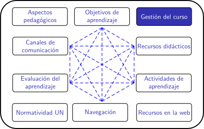
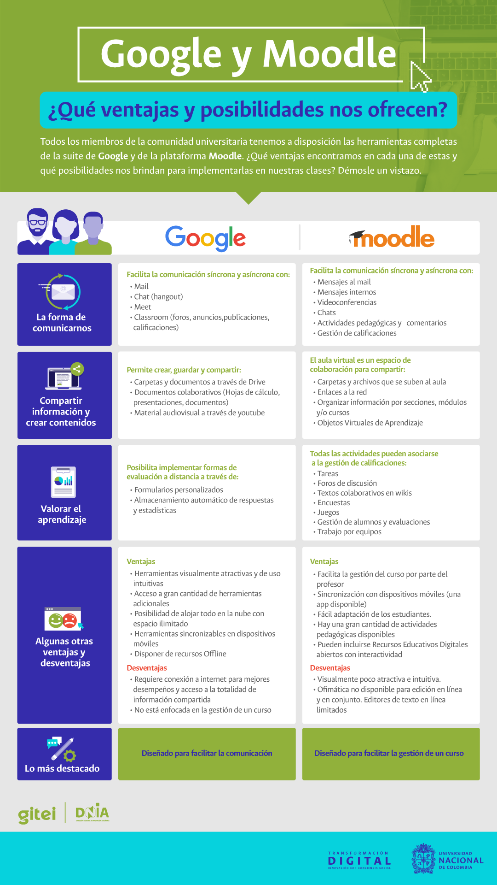

Planificación de clases remotas en la UNAL (periodo 2020-02)
Gestión de cursos
¿A qué nos referimos con "gestión de cursos"?
Es el conjunto de acciones encaminadas a administrar y organizar las actividades y recursos necesarios para el funcionamiento de un curso. La universidad ofrece dos alternativas tecnológicas muy completas para la gestión de cursos: la suite de Google y la plataforma Moodle. En una asignatura podríamos usar herramientas de una u otra, de acuerdo con nuestras necesidades y las de nuestros estudiantes.
Si nos preguntamos ¿Cuál ofrece mejores posibilidades para la gestión? definitivamente la respuesta es la plataforma Moodle, pues se trata de un LMS concebido para la gestión de cursos, mientras de la suite de Google está diseñada principalmente para facilitar la comunicación.
En especial, queremos mencionar aquí dos aspectos importantes de la gestión de cursos en moodle:
- La gestión de grupos de estudiantes.
- La gestión de calificaciones.
De la página clases remotas en la UN tomamos la siguiente infografía que compara las dos opciones:

¿Cuáles son las ventajas de Moodle para la gestión de cursos?
Por tratarse de un administrador de contenidos (LMS) diseñado para favorecer la gestión de cursos, la plataforma Moodle ofrece las siguientes ventajas:
- Varios profesores pueden gestionar un mismo curso de manera sencilla.
- Permite la gestión de grupos para el trabajo colaborativo entre estudiantes así se encuentren en diferentes lugares geográficos.
- Todas las actividades de aprendizaje, individuales o grupales, pueden evaluarse y asociarse a la gestión de calificaciones.
- Para cada actividad evaluable se puede asignar el porcentaje sobre la calificación final.
- El sistema procesa de manera automática los resultados de las actividades evaluables y las consigna en el libro de calificaciones.
- Los estudiantes pueden consultar sus calificaciones por actividad y el acumulado del curso en cualquier momento.
- Ofrece diferentes posibilidades para la retroalimentación con un sentido prospectivo y constructivo.
La plataforma moodle es gestionada por la DNIA, que pone a su disposición los siguientes recursos:
- Videotutoriales sobre el aprovechamiento pedagógico de lo virtual.
- Videotutoriales para dar los primeros pasos en el uso de Moodle.
- Videotutoriales sobre el uso de videoconferencia en Moodle.
- Un curso virtual sobre el uso de Moodle.
- Aula Virtual para experimentar, probar y aprender.
- Un equipo de soporte a través del correo: unvsoporte@unal.edu.co
Preguntas de reflexión
- ¿Cómo aprovechar las ventajas del trabajo colaborativo para el aprendizaje? Participe en el foro.
- ¿Qué ventaja representa que los estudiantes conozcan, al comenzar un curso, las actividades evaluables y su peso sobre la calificación final? Participe en el foro.
- ¿Qué oportunidades ofrece al estudiante la retroalimentación de las actividades evaluables? ¿Cuánto tiempo debe preveer para hacer esa realimentación? Participe en el foro.
Obra publicada con Licencia Creative Commons Reconocimiento Compartir igual 4.0